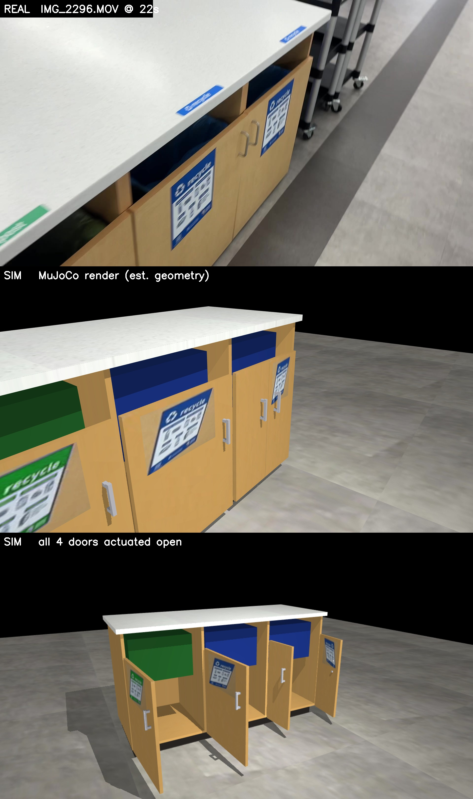
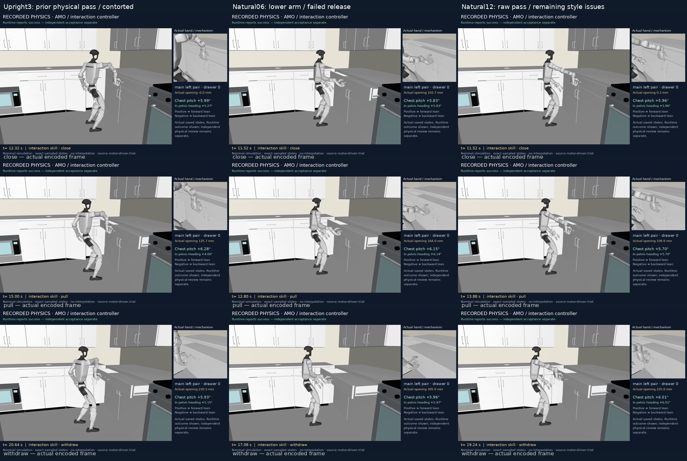
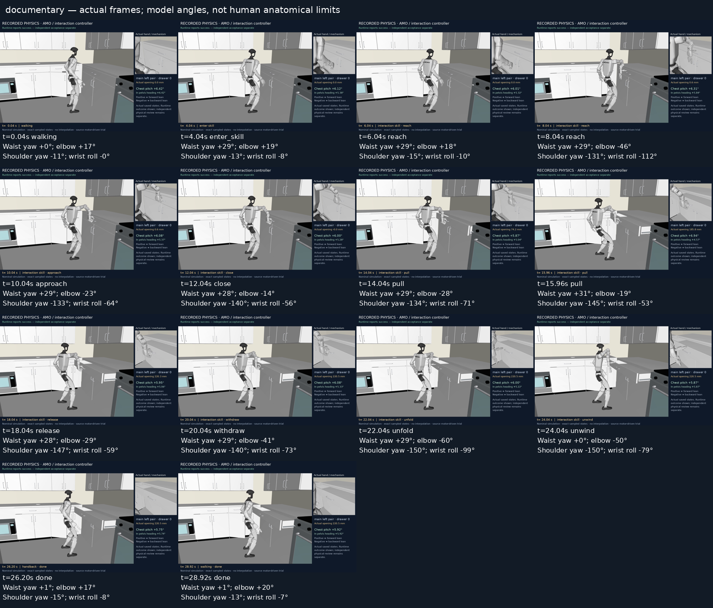
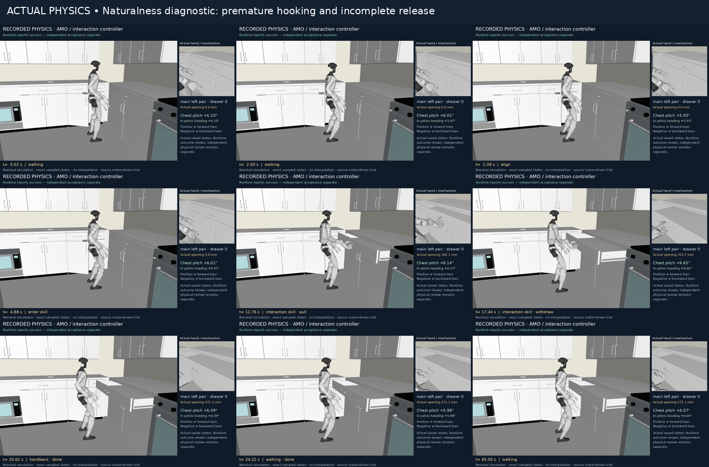
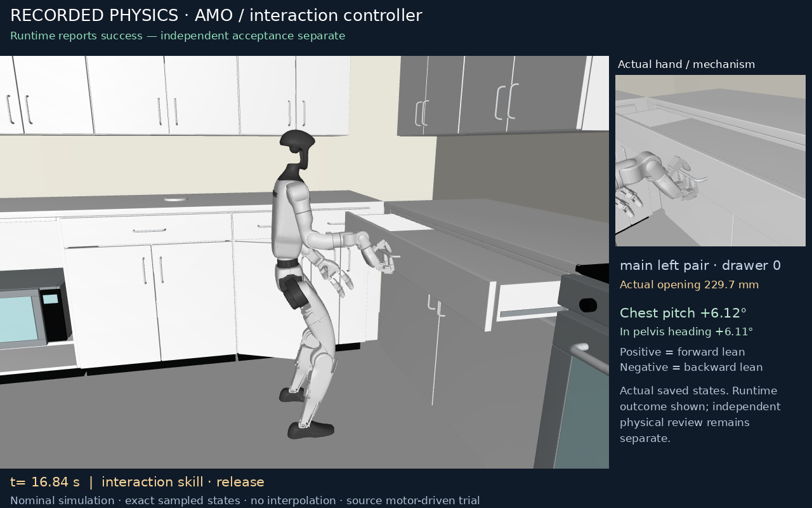

Current activity
Claude bounded real2sim pilot: rebuilt the 3-compartment recycle/compost station from IMG_2296.MOV (19-23 s) as an articulated, video-textured USD + MJCF asset.
Current goal
Current activity
Claude bounded real2sim pilot: rebuilt the 3-compartment recycle/compost station from IMG_2296.MOV (19-23 s) as an articulated, video-textured USD + MJCF asset.
Last reported result
Claude pilot: hinge articulation verified in MuJoCo (peaks 84.5-86.6 deg, settle <0.7 deg, receipt-bound). Visual quality FAILED user review on 2026-09-16: box-primitive geometry and flat rasterizer output are not comparable to the accepted room's photorealism bar. The mechanical pipeline is demonstrated; the appearance/visual-fidelity layer is not.
unchecked · receipt mismatch
Next action
If continuing: proper appearance pass (COLMAP cameras + baked textures or splat layer, GPU is available), beveled/inset door geometry, real label capture from sharper frames, RTX-quality rendering for comparison.
checked · current
dashboard/media/G1_Room_Game_Automatic_Approach.mp4 · continuous-room-bank03-documentary
checked · current
dashboard/media/Claude_Pilot_Recycle_Station_Doors.mp4 · 20260916T0000Z-claude-pilot

checked · current
dashboard/media/Claude_Pilot_Recycle_Station_Comparison.jpg · 20260916T0000Z-claude-pilot

unchecked · receipt mismatch
dashboard/media/G1_Drawer_Naturalness_Comparison.png · natural_pair12_review_image
checked · superseded
dashboard/media/G1_Drawer_Naturalness_Improved.mp4 · natural_pair24_review_video

checked · superseded
dashboard/media/G1_drawer_naturalness_audit.png · drawer_naturalness_audit01
checked · superseded
dashboard/media/G1_controller_comparison.mp4 · controller_floor_comparison01
checked · superseded
dashboard/media/G1_AMO_ScaleBFM_fridge_opening.mp4 · amo_scalebfm_fridge_nominal04
checked · superseded
dashboard/media/G1_MotionBricks_fridge_approach.mp4 · motionbricks_room_transition01
checked · superseded
dashboard/media/G1_Dex3_fridge_to_table_physics.mp4 · final_physics_video01

unchecked · receipt mismatch
dashboard/media/G1_drawer_naturalness_revision.png · natural_pair06_naturalness_review
unchecked · receipt mismatch
dashboard/media/G1_Drawer_Naturalness_Review.mp4 · natural_pair12_review_video

checked · superseded
dashboard/media/G1_Drawer_Improved_Posture.png · natural_pair24_posture_image
checked · superseded
dashboard/media/G1_Two_Drawers_Physics.mp4 · bank_sequence01-documentary
unchecked · receipt mismatch
dashboard/media/G1_Room_Game_Drawer_Skills.mp4 · room-game-drawer-skills01
checked · superseded
dashboard/media/G1_Upright_Drawer_Opening.mp4 · upright3_pair_documentary01